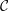
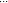

| Up | Next | Prev | PrevTail | Tail |
Authors: P. Gragert, P.H.M. Kersten, G. Post and G. Roelofs.
Author of this Section: R. Vitolo.
We describe CDIFF, a Reduce package for computations in geometry of Differential Equations (DEs, for short) developed by P. Gragert, P.H.M. Kersten, G. Post and G. Roelofs from the University of Twente, The Netherlands.
The package is part of the official REDUCE distribution at Sourceforge [?], but it is also distributed on the Geometry of Differential Equations web site http://gdeq.org (GDEQ for short).
We start from an installation guide for Linux and Windows. Then we focus on concrete usage recipes for the computation of higher symmetries, conservation laws, Hamiltonian and recursion operators for polynomial differential equations. All programs discussed here are shipped together with this manual and can be found at the GDEQ website. The mathematical theory on which computations are based can be found in refs. [?, ?].
NOTE: The new REDUCE package CDE [?], also distributed on http://gdeq.org, simplifies the use of CDIFF and extends its capabilities. Interested users may read the manual of CDE where the same computations described here for CDIFF are done in a simpler way, and further capabilities allow CDE to solve a greater variety of problems.
This brief guide refers to using CDIFF, a set of symbolic computation programs devoted to computations in geometry of DEs and developed by P. Gragert, P.H.M. Kersten, G. Post and G. Roelofs at the University of Twente, The Netherlands.
Initially, the development of the CDIFF packages was started by Gragert and Kersten for symmetry computations in DEs, then they have been partly rewritten and extended by Roelofs and Post. The CDIFF packages consist of 3 program files plus a utility file; only the main three files are documented [?, ?, ?]. The CDIFF packages, as well as a copy of the documentation (including this manual) and several example programs, can be found both at Sourceforge in the sources of REDUCE [?] and in the Geometry of Differential Equations (GDEQ for short) web site [?]. The name of the packages, CDIFF, comes from the fact that the package is aimed at defining differential operators in total derivatives and do computations involving them. Such operators are called -differential operators (see [?]).
The main motivation for writing this manual was that REDUCE 3.8 recently became free software, and can be downloaded here [?]. For this reason, we are able to make our computations accessible to a wider public, also thanks to the inclusion of CDIFF in the official REDUCE distribution. The readers are warmly invited to send questions, comments, etc., both on the computations and on the technical aspects of installation and configuration of REDUCE, to the author of the present manual.
Acknowledgements. My warmest thanks are for Paul H.M. Kersten, who explained to me how to use the CDIFF packages for several computations of interest in the Geometry of Differential Equations. I also would like to thank I.S. Krasil’shchik and A.M. Verbovetsky for constant support and stimulating discussions which led me to write this text.
In order to use CDIFF it is necessary to load the package by the command
All programs that we will discuss in this manual can be found inside the subfolder examples in the folder which contains this manual. In order to run them just do
at the REDUCE command prompt.
There are some conventions that I adopted on writing programs which use CDIFF.
equationname_typeofcomputation_version.red
where equationname stands for the shortened name of the equation (e.g. Korteweg–de Vries is always indicated by KdV), typeofcomputation stands for the type of geometric object which is computed with the given file, for example symmetries, Hamiltonian operators, etc., version is a version number.
Now we describe some examples of computations with CDIFF. The parts of examples which are shared between all examples are described only once. We stress that all computations presented in this document are included in the official REDUCE distribution and can be also downloaded at the GDEQ website [?]. The examples can be run with REDUCE by typing in ~program.red~; at the REDUCE prompt, as explained above.
Remark. The mathematical theories on which the computations are based can be found in [?, ?].
In this section we show the computation of (some) higher symmetries of Burgers’ equation B = ut - uxx + 2uux = 0. The corresponding file is Burg_hsym_1.red and the results of the computation are in Burg_hsym_1_res.red.
The idea underlying this computation is that one can use the scale symmetries of Burgers’ equation to assign “gradings” to each variable appearing in the equation. As a consequence, one could try different ansatz for symmetries with polynomial generating function. For example, it is possible to require that they are sum of monomials of given degrees. This ansatz yields a simplification of the equations for symmetries, because it is possible to solve them in a “graded” way, i.e., it is possible to split them into several equations made by the homogeneous components of the equation for symmetries with respect to gradings.
In particular, Burgers’ equation translates into the following dimensional equation:
By the rules [uz] = [u] - [z] and [uv] = [u] + [v], and choosing [x] = -1, we have [u] = 1 and [t] = -2. This will be used to generate the list of homogeneous monomials of given grading to be used in the ansatz about the structure of the generating function of the symmetries.
The following instructions initialize the total derivatives. The first string is the name of the vector field, the second item is the list of even variables (note that u1, u2, ... are ux, uxx, …), the third item is the list of odd (non-commuting) variables (‘ext’ stands for ‘external’ like in external (wedge) product). Note that in this example odd variables are not strictly needed, but it is better to insert some of them for syntax reasons.
Specification of the vectorfield ddx. The meaning of the first index is the parity of variables. In particular here we have just even variables. The second index parametrizes the second item (list) in the super_vectorfield declaration. More precisely, ddx(0,1) stands for ∂∕∂x, ddx(0,2) stands for ∂∕∂t, ddx(0,3) stands for ∂∕∂u, ddx(0,4) stands for ∂∕∂ux, …, and all coordinates x, t, ux, …, are treated as even coordinates. Note that ‘$’ suppresses the output.
The string letop is treated as a variable; if it appears during computations it is likely that we went too close to the highest order variables that we defined in the file. This could mean that we need to extend the operators and variable list. In case of large output, one can search in it the string letop to check whether errors occurred.
Specification of the vectorfield ddt. In the evolutionary case we never have more than one time derivative, other derivatives are utxxx.
We now give the equation in the form one of the derivatives equated to a right-hand side expression. The left-hand side derivative is called principal, and the remaining derivatives are called parametric11 . For scalar evolutionary equations with two independent variables internal variables are of the type (t,x,u,ux,uxx,…).
Test for verifying the commutation of total derivatives. Highest order defined terms may yield some letop.
This is the list of variables with respect to their grading, starting from degree one.
This is the list of all monomials of degree 0, 1, 2, …which can be constructed from the above list of elementary variables with their grading.
Initialize a counter ctel for arbitrary constants c; initialize equations:
We assume a generating function sym, independent of x and t, of degree ≤ 5.
This is the equation B(sym) = 0, where B = 0 is Burgers’ equation and sym is the generating function. From now on all equations are arranged in a single vector whose name is equ.
This is the list of variables, to be passed to the equation solver.
This is the number of initial equation(s)
The following procedure uses multi_coeff (from the package tools). It gets all coefficients of monomials appearing in the initial equation(s). The coefficients are put into the vector equ after the initial equations.
This command initializes the equation solver. It passes
Run the procedure splitvars in order to obtain equations on coefficiens of each monomial.
Next command tells the solver the total number of equations obtained after running splitvars.
It is worth to write down the equations for the coefficients.
This command solves the equations for the coefficients. Note that we have to skip the initial equations!
In the folder computations/NewTests/Higher_symmetries it is possible to find the following files:
sym = x*(something of degree 3) + t*(something of degree 5)
+ (something of degree 2).
This yields scale symmetries.
sym = x*(something of degree 1) + t*(something of degree 3)
+ (something of degree 0).
This yields Galilean boosts.
In this section we will find (some) local conservation laws for the KdV equation F = ut - uxxx + uux = 0. Concretely, we have to find non-trivial 1-forms f = fxdx + ftdt on F = 0 such that f = 0 on F = 0. “Triviality” of conservation laws is a delicate matter, for which we invite the reader to have a look in [?].
The files containing this example is KdV_loc-cl_1.red, KdV_loc-cl_2.red and the corresponding results files.
We make use of ddx and ddt, which in the even part are the same as in the previous example (subsection 16.13.2). After defining the total derivatives we prepare the list of graded variables (recall that in KdV u is of degree 2):
We make the ansatz
for the components of the conservation law. We have to solve the equation
the fact that ddx and ddt are expressed in internal coordinates on the equation means that the objects that we consider are already restricted to the equation.
We shall split the equation in its graded summands with the procedure splitvars, then solve it
As a result we get
Unfortunately it is clear that the conservation law corresponding to c(3) is trivial, because it is the total x-derivative of F ; its restriction on the infinite prolongation of the KdV is zero. Here this fact is evident; how to get rid of less evident trivialities by an ‘automatic’ mechanism? We considered this problem in the file KdV_loc-cl_2.red, where we solved the equation
after having loaded the values fx and ft found by the previous program. We make the following ansatz on f0:
Note that this gives a grading which is compatible with the gradings of fx and ft. After solving the system
issuing the commands
we obtain
This mechanism can be easily generalized to situations in which the conservation laws which are found by the program are difficult to treat by pen and paper.
In this section we will find local Hamiltonian operators for the KdV equation ut = uxxx + uux. Concretely, we have to solve KdV (phi) = 0 over the equation
or, in geometric terminology, find the shadows of symmetries on the ℓ*-covering of the KdV equation. The reference paper for this type of computations is [?].
The file containing this example is KdV_Ham_1.red.
We make use of ddx and ddt, which in the even part are the same as in the previous example (subsection 16.13.2). We stress that the linearization KdV (phi) = 0 is the equation
but the total derivatives are lifted to the ℓ* covering, hence they must contain also derivatives with respect to p’s. This will be achieved by treating p variables as odd and introducing the odd parts of ddx and ddt,
In the above definition the first index ‘1’ says that we are dealing with odd variables, ext indicates anticommuting variables. Here, ext 3 is p0, ext 4 is px, ext 5 is pxx, …so ddx(1,3):=ext 4 indicates px∂∕∂p, etc..
Now, remembering that the additional equation is again evolutionary, we can get rid of pt by letting it be equal to ext 6 + u*ext 4, as follows:
Let us make the following ansatz about the Hamiltonian operators:
Note that we are looking for generating functions of shadows which are linear with respect to p’s. Moreover, having set [p] = -2 we will look for solutions of maximal possible degree +1.
After having set
we define the procedures splitvars as in subsection 16.13.2 and splitext as follows:
Then we initialize the equations:
do splitext
then splitvars
Now we are ready to solve all equations:
Note that we want all equations to be solved!
The results are the two well-known Hamiltonian operators for the KdV:
Of course, the results correspond to the operators
In this section we will show an experimental way to find nonlocal Hamiltonian operators for the KdV equation. The word ‘experimental’ comes from the lack of a consistent mathematical theory. The result of the computation (without the details below) has been published in [?].
We have to solve equations of the type ddx(ft)-ddt(fx) as in 16.13.2. The main difference is that we will attempt a solution on the ℓ*-covering (see Subsection 16.13.2). For this reason, first of all we have to determine covering variables with the usual mechanism of introducing them through conservation laws, this time on the ℓ*-covering.
As a first step, let us compute conservation laws on the ℓ*-covering whose components are linear in the p’s. This computation can be found in the file KdV_nloc-cl_1.red and related results file. When specifying odd variables in ddx and ddt, we have something like
and
The variables corresponding to the numbers 50,51,52 here play a dummy role, the coefficients of the corresponding vector are the unknown generating functions of conservation laws on the ℓ*-covering. More precisely, we look for conservation laws of the form
The ansatz is chosen because, first of all, ext 4 and ext 5 can be removed from fx by adding a suitable total divergence (trivial conservation law); moreover it can be proved that phi is a symmetry of KdV. We can write down the equations
However, the above choices make use of a symmetry which contains ‘t’ in the generator. This would make automatic computations more tricky, but still possible. In this case the solution of equ 1 has been found by hand and passed to the program:
together with the ansatz on the coefficients for the other equations
The previous ansatz keep into account the grading of the starting symmetry in phi*ext 3. The resulting equations are solved in the usual way (see the example file).
Now, we solve the equation for shadows of nonlocal symmetries in a covering of the ℓ*-covering. We can choose between three new nonlocal variables ra,rb,rc. We are going to look for non-local Hamiltonian operators depending linearly on one of these variables. Higher non-local Hamiltonian operators could be found by introducing total derivatives of the r’s. As usual, the new variables are specified through the components of the previously found conservation laws according with the rule
and analogously for the others. We define
and
as it results from the computation of the conservation laws. The following ansatz for the nonlocal Hamiltonian operator comes from the fact that local Hamiltonian operators have gradings -1 and +1 when written in terms of p’s. So we are looking for a nonlocal Hamiltonian operator of degree 3.
As a solution, we obtain
where ext51 stands for the nonlocal variable rb fulfilling
Remark. In the file KdV_nloc-Ham_2.red it is possible to find another ansatz for a non-local Hamiltonian operator of degree +5.
There is no conceptual difference when computing for systems of PDEs. We will look for Hamiltonian structures for the following Boussinesq equation:
 | (16.71) |
where σ is a constant. This example also shows how to deal with jet spaces with more than one dependent variable. Here gradings can be taken as
where p, q are the two coordinates in the space of generating functions of conservation laws.
The linearization of the above system and its adjoint are, respectively
and lead to the ℓBou* covering equation
We have to find shadows of symmetries on the above covering. Total derivatives must be defined as follows:
In the list of coordinates we alternate derivatives of u and derivatives of v. The same must be done for coefficients; for example,
After specifying the equation
we define the (already introduced) time derivatives:
up to the required order (here the order can be stopped at 15). Odd variables p and q must be specified with an appropriate length (here it is OK to stop at ddx(1,36)). Recall to replace pt, qt with the internal coordinates of the covering:
The list of graded variables:
The ansatz for the components of the Hamiltonian operator is
and the equation for shadows of symmetries is
After the usual procedures for decomposing polynomials we obtain the following result:
which corresponds to the vector (Dx,Dx). Extending the ansatz to
allows us to find a second (local) Hamiltonian operator
There is one more higher local Hamiltonian operator, and a whole hierarchy of nonlocal Hamiltonian operators [?].
Here we propose the computation of the repeated total derivative of a denominator. This computation fills up the whole memory after some time, and can be used as a kind of speed test for the system. The file is KdV_denom_1.red.
After having defined total derivatives on the KdV equation, run the following iteration:
The program shows the iteration number. At the 18th iteration the program uses about 600MB of RAM, as shown by top run from another shell, and 100% of one processor.
There is a simple way to avoid denominator explosion. The file is KdV_denom_2.red.
After having defined total derivatives with respect to x (on the KdV equation, for example) consider in the same ddx a component with a sufficently high index immediately after ‘letop’ (otherwise super_vectorfield does not work!), say ddx(0,21), and think of it as being the coefficient to a vector of the type
In this case, its coefficient must be
More particularly, here follows the detailed definition of ddx
Now, suppose that we want to compute the 5th total derivative of phi. Write the following code:
The result is then a polynomial in the additional ‘denominator’ variable
where the value of aa21 can be replaced back in the expression.
[1] Obtaining REDUCE: http://reduce-algebra.sourceforge.net/.
[2] Geometry of Differential Equations web site: http://gdeq.org.
[3] notepad++: http://notepad-plus.sourceforge.net/
[4] List of text editors: http://en.wikipedia.org/wiki/List_of_text_editors
[5] How to install emacs in Windows: http://www.cmc.edu/math/alee/emacs/emacs.html. See also http://www.gnu.org/software/emacs/windows/ntemacs.html
[6] How to install REDUCE in Windows: http://reduce-algebra.sourceforge.net/windows.html
[7] G.H.M. ROELOFS, The SUPER VECTORFIELD package for REDUCE. Version 1.0, Memorandum 1099, Dept. Appl. Math., University of Twente, 1992. Available at http://gdeq.org.
[8] G.H.M. ROELOFS, The INTEGRATOR package for REDUCE. Version 1.0, Memorandum 1100, Dept. Appl. Math., University of Twente, 1992. Available at http://gdeq.org.
[9] G.F. POST, A manual for the package TOOLS 2.1, Memorandum 1331, Dept. Appl. Math., University of Twente, 1996. Available at http://gdeq.org.
[10] REDUCE IDE for emacs: http://centaur.maths.qmul.ac.uk/Emacs/REDUCE_IDE/
[11] A. V. BOCHAROV, V. N. CHETVERIKOV, S. V. DUZHIN, N. G. KHOR′KOVA, I. S. KRASIL′SHCHIK, A. V. SAMOKHIN, YU. N. TORKHOV, A. M. VERBOVETSKY AND A. M. VINOGRADOV: Symmetries and Conservation Laws for Differential Equations of Mathematical Physics, I. S. Krasil′shchik and A. M. Vinogradov eds., Translations of Math. Monographs 182, Amer. Math. Soc. (1999).
[12] P.H.M. KERSTEN, I.S. KRASIL’SHCHIK, A.M. VERBOVETSKY, Hamiltonian operators and ℓ*-covering, Journal of Geometry and Physics 50 (2004), 273–302.
[13] M. MARVAN, Sufficient set of integrability conditions of an orthonomic system. Foundations of Computational Mathematics 9 (2009) 651–674.
[14] R. VITOLO, CDE: a reduce package for computations in geometry of Differential Equations. Available at http://gdeq.org.
| Up | Next | Prev | PrevTail | Front |